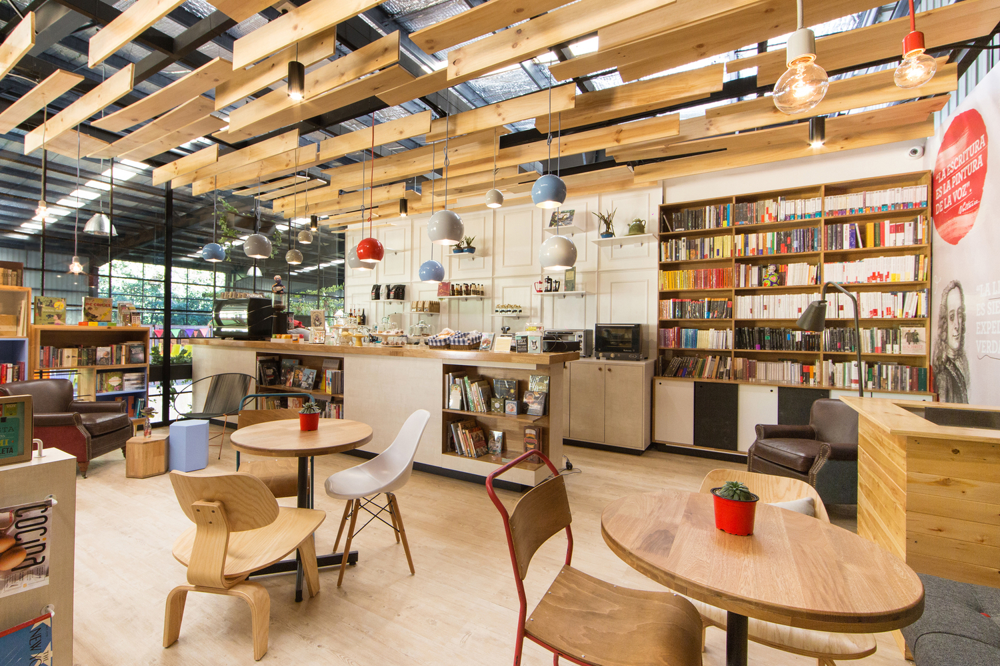

Slim Super thermal sliding door from Rabel Systems is a slim system designed.
Throughout the years, coffee shops and cafés alike have become so much more than just a place to acquire a delicious brew. Since the first coffee shops were established, they have been used as social places to congregate and meeting points for the public. Alongside the development of coffee shops came the ‘coffee culture’, a set of traditions and rules regarding the way cafes are used, and the way these delicious brews are enjoyed.
